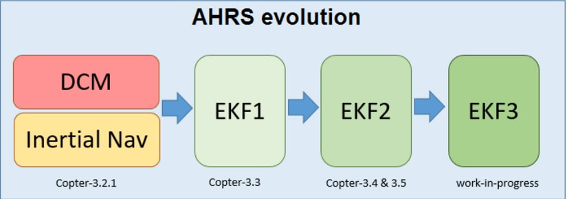

扩展卡尔曼滤波器(EKF)

直升机和固定翼可以使用扩展卡尔曼滤波器（EKF）算法，基于速率陀螺仪，加速度计，罗盘，GPS，空速和大气压力测量来估计飞机位置，速度和角度方向。
EKF与简单的互补滤波器算法（即“惯性导航”）相比优点在于：通过融合所有可用的测量数据，能够更好的过滤掉有明显误差的测量数据，这使飞机不会受单个传感器故障的影响。 EKF还可以使用诸如光流和激光测距仪等可选传感器进行测量，以辅助导航。
目前稳定版本的ArduPilot使用EKF2作为主要态度和位置估算来源，DCM在后台静止运行。 如果飞行控制器有两个（或多个）IMU可用，则两个EKF“内核”（即EKF的两个实例）将并行运行，每个使用不同的IMU。 飞控会选取一个传感器数据一致性最好，性能最佳的EKF核心作为单个EKF输出使用，其它核心不起输出作用。
大多数用户不需要修改任何EKF参数，但下面的信息提供了一些最常见的参数变化信息。 更详细的信息可以在开发者EKF wiki页面找到。
选择EKF和核心数
AHRS_EKF_USE：设置为“1”以启用EKF，“0”用于姿态控制和惯性导航（Copter-3.2.1）或者用于位置控制的航向推算（平面）。 在Copter-3.3（及更高版本）中，此参数被强制为“1”，不能更改。
AHRS_EKF_TYPE：设置为“2”以使用EKF2进行姿态和位置估算，EKF3为“3”。
EK2_ENABLE，EK3_ENABLE：设置为“1”分别启用EKF2/EKF3。
EK2_IMU_MASK，EK3_IMU_MASK：指定要使用哪些IMU（即加速度计/陀螺仪）的位掩码。 将为指定的每个IMU启动EKF“核心”（即单个EKF实例）。
1：使用第一个IMU启动单个EKF内核
2：仅使用第二个IMU启动单个EKF核心
3：分别使用第一个和第二个IMU启动两个单独的EKF内核
常用参数修改
EK2_ALT_SOURCE哪个传感器用作主高度源
0：使用气压计（默认）
1：使用测距仪。这可以用于气压计数据非常嘈杂并且地面相对平坦的环境（即空调器可能引起突然的压力变化的室内）。如果意图执行地形跟踪，则不应使用。对于以下地形地形，请参阅直升机和平面特定地形遵循说明）。
2：使用GPS。当GPS质量非常好并且气压计漂移可能存在问题时有用。例如，如果飞机将执行高度变化> 100m的长途任务。
EK2_ALT_NOISE：默认值为“1.0”。较低的数字减少对加速度计的依赖，增加对气压计的依赖。
EK2_GPS_TYPE：控制GPS的使用方式。
0：使用GPS的3D速度和2D位置
1：使用2D速度和2D位置（GPS速度对高度估计不起作用）
2：使用2D位置
3：无GPS（仅在可用时才使用光流）
如上所述，EKF理论和调整参数的更详细的概述可以在开发人员wiki的扩展卡尔曼滤波器导航概述和调谐上获得。